Prompt Engineering
Prompt Engineering Introduction
Prompt Engineering is its own discipline, apparently. For a quick refresher: A prompt in the context of machine learning is a set of instructions for the machine learning tool to operate upon. You might see something like “3D pandas riding bicycles” or “A robot in a workshop filled with human parts instead of machine parts”. From those descriptions, the tool will generate something that matches it.
On a very high level, my understanding is that these tools have been “trained”. This means they are shown a wealth of data (images, in our case) alongside keywords to identify them. So they might be shown a picture of a motorcycle. The picture includes keywords such as “motorcycle” but also of “engine”, “black” (for the paint), “pavement” (if the background includes such things), and more. This is built up as a “network” (a neural network, I think). It takes a great deal of computing power to train these networks, and I assume a wealth of very good data. This requires humans to catalog a lot of stuff, but perhaps also other machine learning tools that are essentially the inverse of prompt-to-image generation. This training produces a “model”.
The model is then given a prompt by the consumer of the tool. The tool will then offer up some really bad images and say “does this match what was asked for?”, and on the first pass the answer will be a resounding “no”, so the tool takes another pass to clean things up a bit and make things closer, and then the match check is given again. You could think of this as the old “draw the owl” thing from drawing books, wherein one draws some circles that could vaguely define the outline of the owl. Then the artist is instructed to draw more and more details until satisfaction is reached.
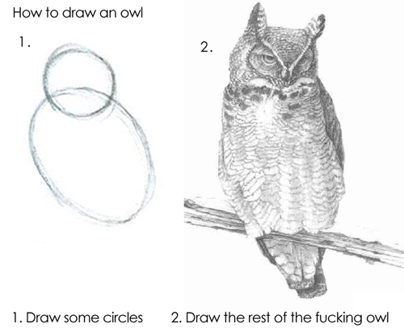
Though there is a lot of in-between steps. This process is much like that. Again though, this is my layman understanding and I hope to revise this as I learn more.
There is some prior art here. I have found this image depicting different sampling methods but I don’t know what all was used and I cannot arbitrarily add more sampling methods to see how it works. I don’t have a seed to reproduce the image.
{kind=link}
Generated
The results of this entire document are generated via literate programming using
org-babel. If you view the source of the original org-mode document you can
see how it got generated, and use it to generate your own. This doesn’t use
stable-diffusion-webui but instead stable-diffusion itself.
stable-diffusion-webui it more or less a wrapper around stable-diffusion
which translates a web UI into the appropriate Python calls. We’ll be making
the Python calls directly for generating our images, but I will ensure that
these calls match what I see in the UI given the same inputs.
That all makes this document both highly reproducible and easy to update. You could even shim in your own models to see what it looks like. At some point I might offer an easy diffing mechanism between various models, but for now it’ll just focus on emitting consistent results given its inputs.
Generating Images - The Code
The Lisp Helper
First we need a quick way to evaluate code blocks. Per the documentation of
org-babel, cache does not work on the #+call form of invoking org-babel
blocks. That said, we can just make blocks of emacs-lisp that call a function
for us. This is that function:
(defun org-babel-block (block, args (save-excursion (goto-char (org-babel-find-named-block block)) (org-babel-execute-src-block-maybe) ) )
And something to catch the missing blocks:
(message "Error: The 'block' parameter was not provided for org-babel-block.")
Making API calls - A Test
The Wiki based API documentation for stable-diffusion-webui is not complete.
It does point to a /docs that can be accessed on the server. This is just a
pretty form of a OpenAPI document. I also don’t see the documentation for
actually kicking off a generation of an image using the txt2image setup.
I did find this gist with a Python script that got me going. Thanks w-e-w!
In the Wiki link above it is stated that the web UI must be started with --api
argument. I thought surely this had changed since the document was written,
because why wouldn’t you want this enabled? Seems like something you’d disable
explicitly. Perhaps it’s more muggle based. In any case, it’s very much
required. This tripped me up during my discovery of things.
Of course, once you are running things with --api, all of the endpoints show
up correctly in the /docs URL. I should clean this up soon.
import urllib.request import base64 import json import time import os file_out = 'test' payload = { 'prompt': 'dreamscape', 'steps': 20, 'seed': 503043532, } request = urllib.request.Request( 'http://localhost:7860/sdapi/v1/txt2img', headers={ 'Content-Type': 'application/json; charset=utf-8' }, data= json.dumps(payload).encode('utf-8'), ) response = urllib.request.urlopen(request) response_data = json.loads(response.read().decode('utf-8')) for index, image in enumerate(response_data.get('images')): path = f'{file_out}-{index}.png' with open(path, "wb") as file: file.write(base64.b64decode(image)) print(f'[[file:./{path}]]')
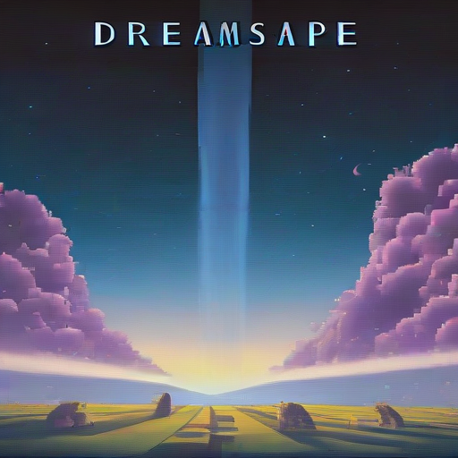
Making API Calls - A Reusable Block
import urllib.request import base64 import json import time import os payload = { 'prompt': prompt, 'steps': samples, 'seed': 503043532, } request = urllib.request.Request( 'http://localhost:7860/sdapi/v1/txt2img', headers={ 'Content-Type': 'application/json; charset=utf-8' }, data= json.dumps(payload).encode('utf-8'), ) response = urllib.request.urlopen(request) response_data = json.loads(response.read().decode('utf-8')) for index, image in enumerate(response_data.get('images')): path = f'{file_out}-{index}.png' with open(path, "wb") as file: file.write(base64.b64decode(image)) print(f'[[file:./{path}]]')
Sample Prompts
To give a little variety here, let’s agree on a few base sample prompts that should explore a variety of different things we could show. For each parameter we choose to tweak, we will use all of these base prompts as well.
These parameters are laid out as a necessity for consistent generation, and it isn’t terribly important that the values are understood for new readers. This could serve as good reference though.
dreamscape
man
woman
city or village or landscape
The seed will be:
503043532
Our default sample size will be:
20
Our default model will be:
endjourneyXL_v11
Our default sampling method will be:
dpm2pp_2m_karras
512
512
7
The base URL for the stable-diffusion-webui server is:
http://localhost:7860
Inputs
Various inputs decide the quality of the image, what appears in the image, and so on. This includes the prompt itself, but also a lot of other variables. For the purposes of illustration, let’s use this base image so we can see what the varied outcomes are.
The Base
As described in Sample Prompts, our base is as follows:
(org-sbe text-to-image (file_out prompt-base-1) (prompt prompt-base-1) )
(org-sbe text-to-image (file_out prompt-base-2) (prompt prompt-base-2) )
(org-sbe text-to-image (file_out prompt-base-3) (prompt prompt-base-3) )
(org-sbe text-to-image (file_out prompt-base-4) (prompt prompt-base-4) )

Seed
This should be front an center because it is key to using consistent results. The seed is a concept taking from random number generators (which this uses under the hood). Random number generators aren’t actually random but instead produce a fixed sequence of numbers that appears random. If you have two random number generators using the same algorithm and the same seed, they will produce the exact same two sequences. This is handy because you can lock in the seed to refine the existing image by tweaking its parameters. I’ve noticed that using a particular seed also seems to pick the same qualities, even if the parameters or even the model differ. I had found a sequence where “cute girl” had produced a Japanese woman consistently, regardless of other modifiers given that didn’t influence ethnicity.
Seeds will be used heavily in this document to produce consistent results.
Classifier Free Guidance (CFG)
Stable Diffusion (or perhaps all of these tools) expresses “creativity” in which it adds things that weren’t asked for or ignores parts of your prompt. This is called the Classifier Free Guidance scale, or CFG. A lower number indicates more freedom on the tool’s end, where the lowest number indicates a complete disregard for the prompt. The higher it is, the more strictly the prompt is held to. At very high numbers, the images will appear “forced”.
7 is the default in stable-diffusion-webui, which offers a great deal of
creativity. I am told 15 is “very high”, but I don’t actually know that I’ve
seen it do a “bad” job so far at that level.
Samples
The number of samples is loosely the number of passes that will be made against
the image. With stable-diffusion-webui, you can see it creating passes
slowly. Occasionally the UI will load an image in-progress, which starts off
being very fuzzy, and then moves to something full of artifacts, and at some
point later you get the final image.
The number of samples you use increases the fidelity of the image and also will remove things that are obvious errors (such as poor faces, hands, and so on that these tools are notorious for). More samples means the image will take much longer. If it takes a minute to generate a 20 sample image, then it will take around two minutes for 40 samples of the same image. The default value is 20, and I have been cautioned that going above 50 is undesirable. I generally start at 20 until the main elements of the image are captured, and then regenerate with the same seed using 50.
Generally I think of this as just doing refinements, but during these trials I found that sample size can also result in entirely different images. In some cases the images just get better - things look less blotchy and ill-defined. In the case of the woman, I effectively have a separate image for each run.
very low samples
(org-sbe text-to-image (file_out $(concat (org-sbe prompt-base-1) "-low-samples")) (prompt prompt-base-1) (samples 10) )
(org-sbe text-to-image (file_out $(concat (org-sbe prompt-base-2) "-low-samples")) (prompt prompt-base-2) (samples 10) )
(org-sbe text-to-image (file_out $(concat (org-sbe prompt-base-3) "-low-samples")) (prompt prompt-base-3) (samples 10) )
(org-sbe text-to-image (file_out $(concat (org-sbe prompt-base-4) "-low-samples")) (prompt prompt-base-4) (samples 10) )

high samples
(org-sbe text-to-image (file_out $(concat (org-sbe prompt-base-1) "-high-samples")) (prompt prompt-base-1) (samples 50) )
(org-sbe text-to-image (file_out $(concat (org-sbe prompt-base-2) "-high-samples")) (prompt prompt-base-2) (samples 50) )
(org-sbe text-to-image (file_out $(concat (org-sbe prompt-base-3) "-high-samples")) (prompt prompt-base-3) (samples 50) )
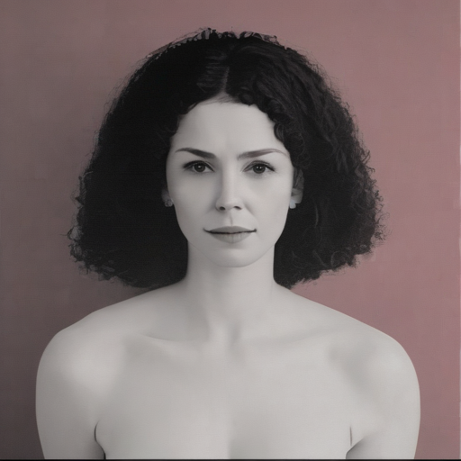
(org-sbe text-to-image (file_out $(concat (org-sbe prompt-base-4) "-high-samples")) (prompt prompt-base-4) (samples 50) )

very high samples
(org-sbe text-to-image (file_out $(concat (org-sbe prompt-base-1) "-very-high-samples")) (prompt prompt-base-1) (samples 100) )
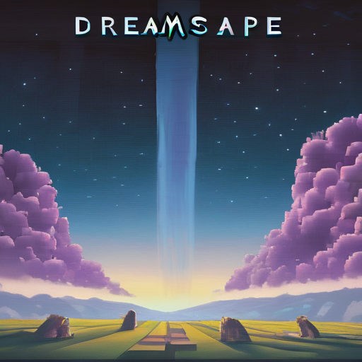
(org-sbe text-to-image (file_out $(concat (org-sbe prompt-base-2) "-very-high-samples")) (prompt prompt-base-2) (samples 100) )

(org-sbe text-to-image (file_out $(concat (org-sbe prompt-base-3) "-very-high-samples")) (prompt prompt-base-3) (samples 100) )
(org-sbe text-to-image (file_out $(concat (org-sbe prompt-base-4) "-very-high-samples")) (prompt prompt-base-4) (samples 100) )

Takeaway: The landscape image didn’t improve much, but there were notable improvements on the other images. More samples just means better. I’d have to do higher numbers to get a better idea with diminishing returns.
Sampling Method
From my reading, the default DPM2++ 2M Karras (include true identifier) works best for modern models. I’ve heard good things about Euler A but it is either subjective or for older models. I need to do a study of how they differ.
Dimensions
I don’t think that height and width are the literal size of the image but I need to verify this. This does become a factor with the “Hires fix”.
High Resolution “Fix”
Refiner
Batch
Tokens
A token is effectively a single “thought” or a keyword/keyphrase inside of the prompt. With a prompt such as “pandas filing taxes”, that phrase gets tokenized. How exactly it slices these tokens and interprets them is a complete mystery to me.
The tokens are treated as a sort of word salad. There is a limit to the number of tokens that can be used, with some caveats. Tokens can be weighted (and possibly grouped?). Tokens can also be “stepped” and even alternated with a cutoff with another token. There is a standard syntax and a legacy syntax.
Token Limits
There is an upper limit to these tokens in both the positive and negative prompts. I do not know if pushing closer to that boundary causes significantly increased processing time. That upper limit just breaks the image processing into two large parts - one part with one set of tokens and another part with the remaining tokens (or some continuation of that, if you go many multiples over the limit). The limit in Stable Diffusion is quite large I have found, with 75 tokens. I do not know if the tokens between the positive and negative prompts tally up.
Word Salad
I have noticed that words seem to be taken in any order with no respect to grammar. So with “pandas filing taxes”, the end result is something to the effect of “taxes”, “pandas”, and “filing”, and the model goes to work on that. This can make some problems because if we use “blue hair”, we’ll get lots of things that aren’t blue, and the hair might remain not-blue.
blue hair
(org-sbe text-to-image (file_out $(concat (org-sbe prompt-base-1) "-word-salad-blue-hair")) (prompt $(concat (org-sbe prompt-base-1) (org-sbe word-salad-blue-hair))) )
(org-sbe text-to-image (file_out $(concat (org-sbe prompt-base-2) "-word-salad-blue-hair")) (prompt $(concat (org-sbe prompt-base-2) (org-sbe word-salad-blue-hair))) )
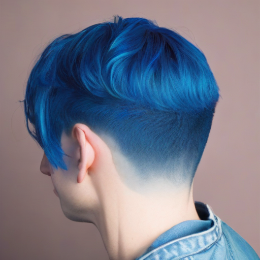
(org-sbe text-to-image (file_out $(concat (org-sbe prompt-base-3) "-word-salad-blue-hair")) (prompt $(concat (org-sbe prompt-base-3) (org-sbe word-salad-blue-hair))) (samples 30) )
(org-sbe text-to-image (file_out $(concat (org-sbe prompt-base-4) "-word-salad-blue-hair")) (prompt $(concat (org-sbe prompt-base-4) (org-sbe word-salad-blue-hair))) )

(org-sbe text-to-image (file_out $(concat (org-sbe prompt-base-3) "-word-salad-blue-hair")) (prompt $(concat (org-sbe prompt-base-3) ", " (org-sbe word-salad-blue-hair))) (samples 30) )
It’s interesting in the case of the dreamscape and landscape prompts that it ignored those and just used a woman, but that is for a later break-down.
Adding just “blue hair” doesn’t prove my point well. I imagine this is because when the prompt is “man blue hair” that blue men aren’t as common as blue hair on a man, or any colored hair on a man. Let’s try it with an additional prompt:
, blue hair, red tie
(org-sbe text-to-image (file_out $(concat (org-sbe prompt-base-1) "-word-salad-blue-hair-extra")) (prompt $(concat (org-sbe prompt-base-1) (org-sbe word-salad-blue-hair-extra))) )
(org-sbe text-to-image (file_out $(concat (org-sbe prompt-base-2) "-word-salad-blue-hair-extra")) (prompt $(concat (org-sbe prompt-base-2) (org-sbe word-salad-blue-hair-extra))) )
(org-sbe text-to-image (file_out $(concat (org-sbe prompt-base-3) "-word-salad-blue-hair-extra")) (prompt $(concat (org-sbe prompt-base-3) (org-sbe word-salad-blue-hair-extra))) )
(org-sbe text-to-image (file_out $(concat (org-sbe prompt-base-4) "-word-salad-blue-hair-extra")) (prompt $(concat (org-sbe prompt-base-4) (org-sbe word-salad-blue-hair-extra))) )

Okay that’s not enough to produce the “swap” issue I’ve seen. Let’s make this more complicated and add another color.
, blue hair, red tie, a green house on a hill
(org-sbe text-to-image (file_out $(concat (org-sbe prompt-base-1) "word-salad-blue-hair-red-tie-green-house-hill")) (prompt $(concat (org-sbe prompt-base-1) (org-sbe word-salad-blue-hair-red-tie-green-house-hill))) )
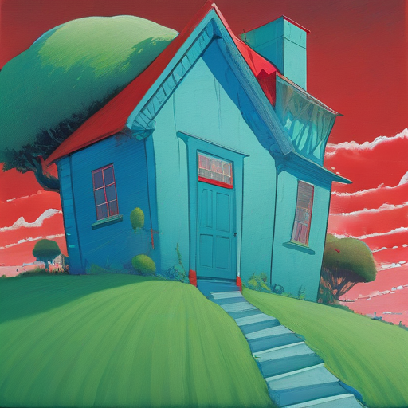
(org-sbe text-to-image (file_out $(concat (org-sbe prompt-base-2) "word-salad-blue-hair-red-tie-green-house-hill")) (prompt $(concat (org-sbe prompt-base-2) (org-sbe word-salad-blue-hair-red-tie-green-house-hill))) )
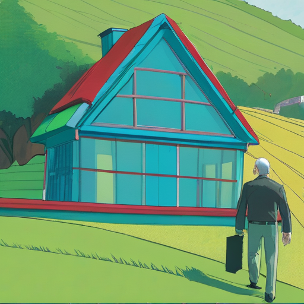
(org-sbe text-to-image (file_out $(concat (org-sbe prompt-base-3) "word-salad-blue-hair-red-tie-green-house-hill")) (prompt $(concat (org-sbe prompt-base-3) (org-sbe word-salad-blue-hair-red-tie-green-house-hill))) )
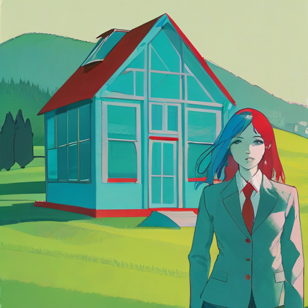
(org-sbe text-to-image (file_out $(concat (org-sbe prompt-base-4) "word-salad-blue-hair-red-tie-green-house-hill")) (prompt $(concat (org-sbe prompt-base-4) (org-sbe word-salad-blue-hair-red-tie-green-house-hill))) )

Okay now we’re seeing some color mixing. How do we ensure we get what we wanted? I’ve been told this is due to Swapped Tokens.
Weights
Keywords can be weighted. This is done via a parenthesis notation around the
keyword, a colon, and a number. So the keyword dragon would indicate you want
to see a dragon. Using (dragon: 1.5) means you want to see a dragon but is
weighted higher than other keywords by a significant margin. The
Swapped Tokens
Swapped tokens use the syntax [foo:bar:step], were foo and bar are
individual tokens separated by a colon, and followed by another colon is the
step in the samples at which to switch to the other token.
There is multiple utility here:
- Things can be blended together. One can do something like
[forest:city:20]and the first 20 steps will be making a forest, where the last N steps will be that of a city for whatever the forest part was. This can make forest-inspired or forest-looking cities. - Color can be forced to work around issues observed wit Word Salad. I’m not sure how this is done yet.
Blending with Steps
, forest
(org-sbe text-to-image (file_out $(concat (org-sbe prompt-base-1) "-blending-steps-forest")) (prompt $(concat (org-sbe prompt-base-1) (org-sbe blending-steps-forest))) )
(org-sbe text-to-image (file_out $(concat (org-sbe prompt-base-2) "-blending-steps-forest")) (prompt $(concat (org-sbe prompt-base-2) (org-sbe blending-steps-forest))) )
(org-sbe text-to-image (file_out $(concat (org-sbe prompt-base-3) "-blending-steps-forest")) (prompt $(concat (org-sbe prompt-base-3) (org-sbe blending-steps-forest))) )
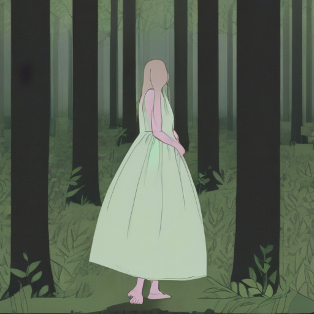
(org-sbe text-to-image (file_out $(concat (org-sbe prompt-base-4) "-blending-steps-forest")) (prompt $(concat (org-sbe prompt-base-4) (org-sbe blending-steps-forest))) )

Now let’s do something that makes perfect sense: Make a forest of candy canes.
, [forest:candy-canes:5]
(org-sbe text-to-image (file_out $(concat (org-sbe prompt-base-1) "-blending-steps-forest-of-candy-canes")) (prompt $(concat (org-sbe prompt-base-1) (org-sbe blending-steps-forest-of-candy-canes))) )
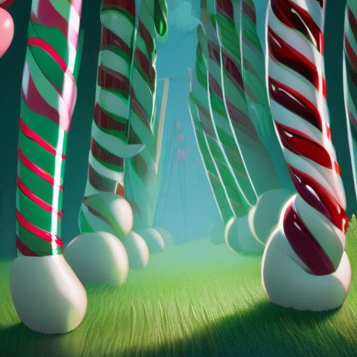
(org-sbe text-to-image (file_out $(concat (org-sbe prompt-base-2) "-blending-steps-forest-of-candy-canes")) (prompt $(concat (org-sbe prompt-base-2) (org-sbe blending-steps-forest-of-candy-canes))) )
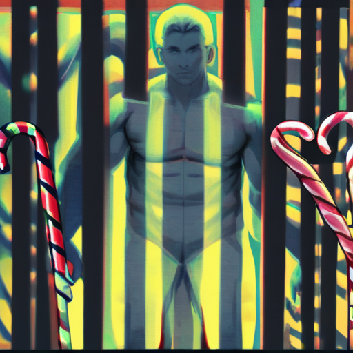
(org-sbe text-to-image (file_out $(concat (org-sbe prompt-base-3) "-blending-steps-forest-of-candy-canes")) (prompt $(concat (org-sbe prompt-base-3) (org-sbe blending-steps-forest-of-candy-canes))) )
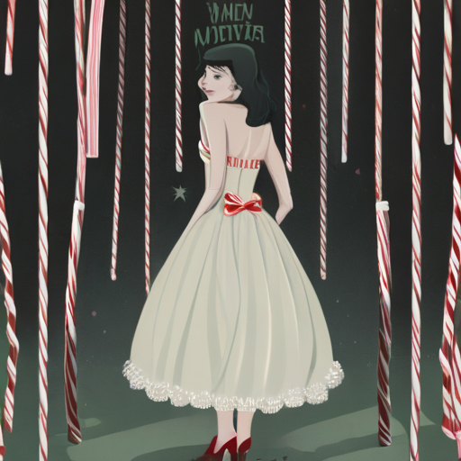
(org-sbe text-to-image (file_out $(concat (org-sbe prompt-base-4) "-blending-steps-forest-of-candy-canes")) (prompt $(concat (org-sbe prompt-base-4) (org-sbe blending-steps-forest-of-candy-canes))) )

Alternating Tokens
Like Swapped Tokens, alternating tokens switch between the tokens every other step in the sampling. Let’s try the same forest of candy canes, but with alternating instead of stepped.
, [forest|candy canes]
(org-sbe text-to-image (file_out $(concat (org-sbe prompt-base-1) "-alternating-steps-forest-of-candy-canes")) (prompt $(concat (org-sbe prompt-base-1) (org-sbe alternating-steps-forest-of-candy-canes))) )
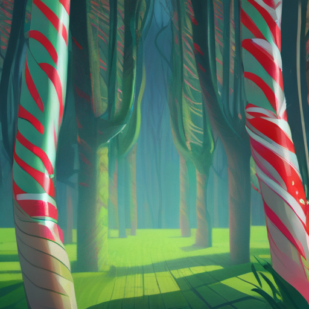
(org-sbe text-to-image (file_out $(concat (org-sbe prompt-base-2) "-alternating-steps-forest-of-candy-canes")) (prompt $(concat (org-sbe prompt-base-2) (org-sbe alternating-steps-forest-of-candy-canes))) )
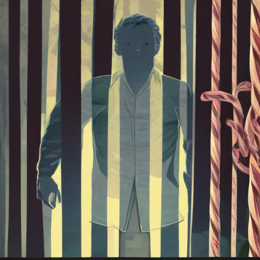
(org-sbe text-to-image (file_out $(concat (org-sbe prompt-base-3) "-alternating-steps-forest-of-candy-canes")) (prompt $(concat (org-sbe prompt-base-3) (org-sbe alternating-steps-forest-of-candy-canes))) )
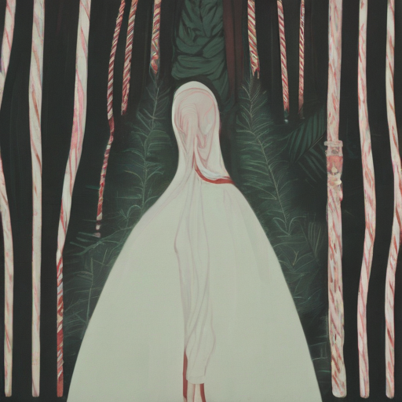
(org-sbe text-to-image (file_out $(concat (org-sbe prompt-base-4) "-alternating-steps-forest-of-candy-canes")) (prompt $(concat (org-sbe prompt-base-4) (org-sbe alternating-steps-forest-of-candy-canes))) )

Tokens - Ceasing and Starting at Specific Steps
Use [token:step] to start using token at sample step count step. I’ve
read this can be used to control color.
Use \[\[token:step]] to remove token at sample step count step. I do
not know the utility for this one as much.